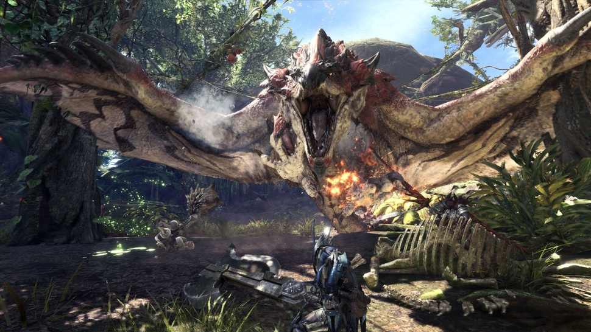
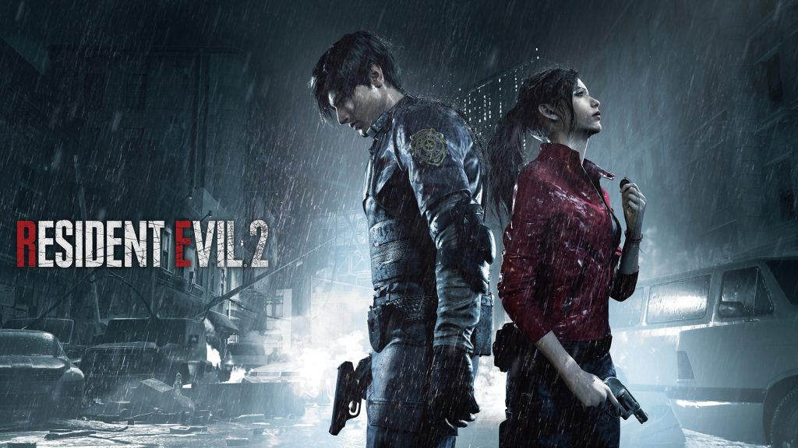

Capcom ประกาศ Monster Hunter World
เป็นเกมที่ทำยอดขายได้มากที่สุดถึง 14.1 ล้านชุด!


โดยทางค่าย Capcom เป็นทีมงานผู้พัฒนาซีรี่ส์เกมต่างๆเช่น Monster Hunter, Resident Evil, Devil May Cry และ
Street Fighter และอื่นๆมากมาย และล่าสุดได้ออกมาประกาศ 10 อันดับเกมที่ทำยอดขายได้มากที่สุด คือ Monster Hunter
World ได้ทำยอดขายไปถึง 14.1 ล้านชุด แถมยังขึ้นเป็นตัวเกมที่ทำยอดขายได้มากที่ดีในประวัติศาสตร์ของ Capcom

ซึ่งทำได้สูงกว่า Resident Evil 7 ที่สามารถทำยอดได้ได้ถึง 6.88 ล่าน และ Resident Evil 2 Remake
ที่ได้ออกวางจำหน่ายในต้นปี และมีกระแสตอบรับที่ดี แต่ก็ทำยอดขายได้เพียง 4.7 ล้านชุด และยังไม่สามารถที่จะล่ม
Resident Evil 2 ตัวตันฉบับที่ได้ออกวางจำหน่าย PlayStation ภานในปี 1998
